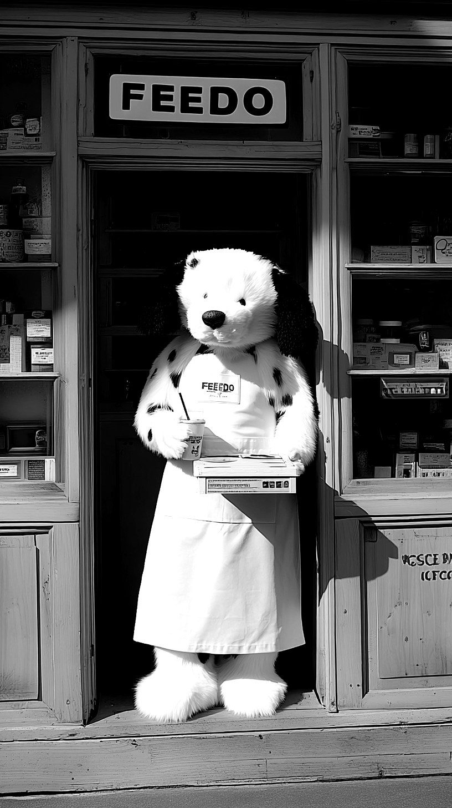
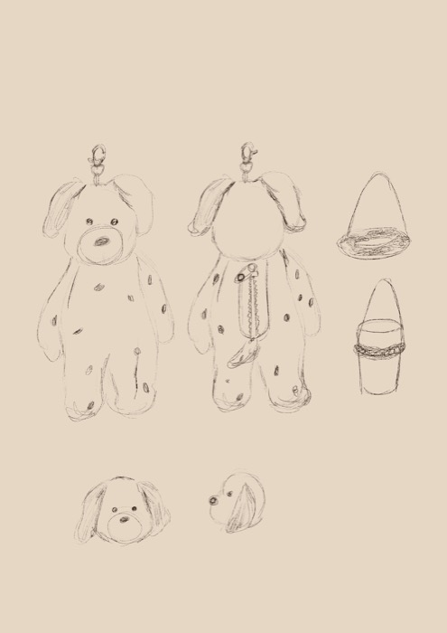

2 支 · 輕發酵｜原始與清冷
像設計草圖上的第一道極細線。保留茶葉最原始的清香，口感乾淨、透亮，適合想讓腦袋留白的瞬間。
用最理性的座標，
餵養最感性的日常。
FEEDO 來自 feed 與 do——以微小的行動，滋養你的一天。

我們以台灣烏龍為核心。透過不同程度的發酵與焙火，烏龍茶能從輕盈的花香、熟果與蜜香，一路走向溫暖深沉的焙火氣息。
FEEDO 將這些風味由輕至重整理成一條容易理解的座標。每支茶都有適合自己的時間、溫度與沖泡方式，讓不熟悉茶的人，也能慢慢找到屬於自己的那一杯。
像設計草圖上的第一道極細線。保留茶葉最原始的清香，口感乾淨、透亮，適合想讓腦袋留白的瞬間。
像是草圖上反覆修改後，終於對齊的那條基準線。火候不多不少，帶出溫和的穀木香氣，不搶眼卻極其耐看，是生活中最理所當然的陪伴。
像是鉛筆在草圖暗處反覆塗抹、疊加出的陰影層次。經過長時間的火候淬鍊，口感濃厚且紮實，帶著一抹被時間炭烤過的沉穩焦香，適合想安靜下來的時刻。
在理性的結構裡，留一份優雅的餘地。茶湯裡隱約的自然花韻，是日常裡最不經意的驚喜。
開店籌備時寫下的一段話
我的每支茶，沖泡的時間與溫度都是不同的。
茶葉的發酵程度、揉捻後的形狀，都會讓沖泡的時間需要細微地加加減減。我極其沉溺於這種過程——在時間、溫度與水之間，反覆調整出那個「剛剛好」的比例。
我沒有自動煮茶機，因為機器缺乏掌控頻率的靈魂，我更享受這些手感的變化。就像人生，沒有哪一天是完全一樣的。
「或許有天，剛好時間、溫度與水對不上，那便是不完美、不完整的一天；但對我來說，那才是一天最真實的樣子。」
飲料的口味固然能為日常增添色彩，但控制這一切的，終究是茶葉的本質：時間、溫度、與水。
我享受這一切失準與精準交織的過程。

我們不使用奶蓋粉，而是堅持以奶油乳酪（Cream Cheese）為基底，加入鹽、煉乳、鮮奶油與鮮乳，在低溫的狀態下，打發出那種不多不少、剛剛好的滑順度。
「鮮奶茶是乳化的溫柔，奶蓋則是層次的提煉。」
它是為了提升味蕾的層次而存在。奶油乳酪的厚實質感，能瞬間抓住你的感官，隨後穿透而上的單茶風味，會因為這層鹹甜的對比，顯得更加清亮、鮮明。
奶蓋需要夠冷的溫度，才能鎖住那份滑順而不膩口。這也是我們對「溫度控制」的另一種沉溺。
品牌也來自我對設計的喜愛。
我喜歡觀察生活中任何美的事物，再透過設計，把它轉換成另一種可以被感受的形式。它可能成為一杯茶、一只杯套、一張照片，也可能成為房間裡的一段收藏。
對我而言，設計不是飲品之外的裝飾，而是 FEEDO 理解日常、保存日常的方式。
這也是 FEEDO MUSEUM 的由來。
我們想收藏的不是遙遠的作品，而是生活中真實發生過的片刻。一杯茶、一次到店、一件帶走的物品或一張照片，都可能成為值得留下的日常。
這些散落在不同時間裡的相遇，會慢慢被收進屬於你的房間。當你再次回來，看見的不只是收藏，也是一段與 FEEDO 一起經過的時間。

Moby 是我們家的狗狗。什麼都好奇、什麼都想聞聞看，主人在哪，都要跟在腳邊。
從杯套、照片到房間裡的收藏，Moby 陪著 FEEDO 記錄每一次相遇。

帶著 Moby 出門，標記 @feedomuseum，你的街拍可能登上下一期 Feedo Times。